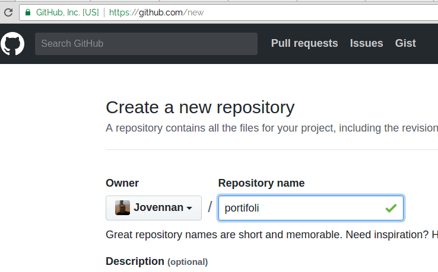
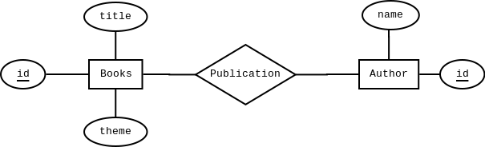

Abra o terminal e digite o código abaixo, para criar um novo APP
$ rails new portfolio -d postgresqlAcesse a pasta do APP
$ cd portifolioEdite o arquivo config/database.yml:
Atualize as informações
username: seuUserDB
password: senhaDoUserDB
host: localhost
port: 5432Salve
no terminal:
$ rails db:createGerando o Model Programmer
$ rails g model Programmer name:stringGerando o Model Client
$ rails g model Client name:stringGerando o Model Project
$ rails g model Project description:string programmer:references client:references
rails db:migrate
rails console
programmer = Programmer.create(name: 'Juquinha')
client = Client.create(name: 'Armazém Paraíba')
programmer.projects.create(client: client, description: 'Chega Já - Sistema de entregas')
Gerando o Model Schedule
$ rails g model Schedule initial_date:date final_date:date project:referencesGerando o Model Task
$ rails g model Task description:string schedule:references
rails db:migrate
rails console
ENV["TZ"] = "America/Recife"
initial = Date.parse("2 Apr 2017")
final = Date.parse("2 Jul 2017")
schedule = Schedule.create(initial_date: initial, final_date: final, project: Project.find_by(id: 1))
task1 = Task.create(description: 'Levantamento de Requisitos', schedule: schedule)
task2 = Task.create(description: 'Definindo a Arquitetura', schedule: schedule)
task3 = Task.create(description: 'Modelagem do Banco de Dados', schedule: schedule)
task1.schedule
task1.schedule.project
task1.schedule.project.client.name
task1.schedule.project.programmer.name
$ rails db
# SELECT * FROM projects;
# SELECT * FROM tasks;
# SELECT * FROM schedules;
# SELECT * FROM programmers;
# SELECT * FROM clients;
# SELECT Tasks.id, Schedules.initial_date, Tasks.description FROM Tasks INNER JOIN Schedules ON Tasks.schedule_id=Schedules.id;
Acesse a pasta do APP:
$ git init$ git add -A$ git commit -m "Camada Model concluida"Acesse Sua conta do GitHub
$ git remote add origin git@github.com:seuUsuario/portifolio.git$ git push -u origin masterConsidere o seguinte DER
Abra o terminal e digite o código abaixo, para criar um novo APP
$ rails new libraryAcesse a pasta do APP
$ cd libraryno terminal:
$ rails db:createGerando o Model Author
$ rails g model Author name:stringGerando o Model Book
$ rails g model Book title:string theme:stringGerando uma migração para o relacionamento
$ rails g migration CreateBooksAuthors author:references book:references
rails db:migrate